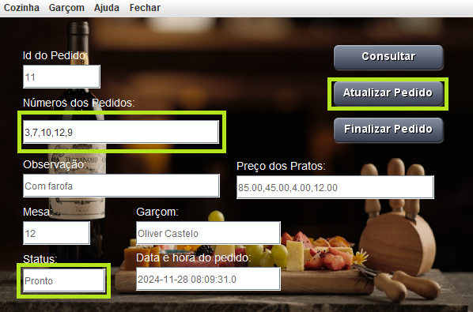
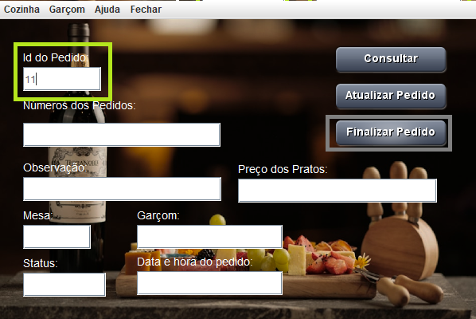

Primeiramente, vamos iniciar o programa e esperar a tela de carregamento terminar:

Quando terminar, irá abrir a tela de efetuar pedido, utilizada pelos atendentes para produzir o pedido do usuário:
No campo "Números dos Pedidos" são colocados as identificações em forma de número dos pratos e bebidas. Para saber quais números são esses, clique em "Garçom", no cabeçalho, e clique em "Menu":
Agora que já sabe quais são os itens do menu, podemos efetuar um pedido. Vá até "Garçom", no cabeçalho, e clique em "Efetuar Pedido". Com a tela aberta vamos criar um pedido e depois clicar no botão "Efetuar Pedido":
Com o pedido criado, vamos até "Cozinha", no cabeçalho, e clique em "Ver Pedidos". Essa tela será utilizada pelo cozinheiro para ver o que ele deve preparar:
Utilizando o botão "Consultar Pedido" irá abrir a tela de consulta. Lá o cozinheiro poderar ver mais detalhes sobre o pedido, como os preços, observação, data e hora.
Para ver essas informações, ele terá que colocar somente o ID do pedido e clicar no botão consultar:
O cozinheiro ou o garçom poderár alterar informações do pedido, como o status, indicando se o pedido está pronto ou não, e adicionar mais pratos. Depois de fazer alterações, clique no botão "Atualizar Pedido" e depois clique em "OK":
Agora que o pedido está pronto e o cliente terminou de comer, ele terá que receber a conta. Fazemos isso colocando o ID do pedido no campo "Id do Pedido" e clicando em "Finalizar Pedido"
Para finalizar por completo, clicamos no botão "Gerar Comanda" para criar uma notinha com os itens consumidos e o valor total:
E por fim, para fechar o programa, basta ir até "Fechar", no cabeçalho, e clicar em "Sair":
Feito por Matheus Faustino e Pedro Cabral